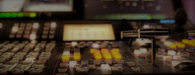

NOSOTROS
Radio
Programa de música folklórica Argentina que comenzo el
domingo 20 de agosto del año 2000 en FM RADIORAMA 97.1 MHz,
primera emisora fundada en la ciudad de América, cabecera
del partido de Rivadavia dirigida por el señor Juan Carlos Andrade.
Se emitió todos los domingos de 10:00 hs a 13:30 hs, hasta el 27 de Marzo del año 2005
último programa en esa emisora por cambio de directorio.
El 27 de abril de ese mismo año, con el mismo horario y día se reanudó la
transmisión hasta el día de la fecha en Amaneciendo F.M 100.7 MHz nacida en el año 1992
creada y diseñada por su dueño y director Sergio Sánchez siendo la segunda emisora F.M fundada en la ciudad.
El contenido del programa consta de un comienzo con un mini recital de los intérpretes folklóricos
que se eligen para cada programa, luego en el transcurso del mismo también se le dedica un espacio de dos temas para la música
del litoral (Chamame), y el humor con dos cuentos o música perteneciente a ese rubro en el folklore,
un relato de diferentes autores para pensar y reflexionar desde el corazón.
Televisión
El primer programa se emitió el jueves 23 de noviembre del año 2000
a través del canal de cable local de la ciudad de América "Top Visión Canal 3"
quien lo dirigia Juan Carlos Masias.
Se transmitió hasta el 22 de Agosto del año 2002.
El viernes 13 de septiembre del año 2002, comienza un nuevo ciclo
por circuito cerrado en "América T.V. S.A. Canal 2" el primer canal
local de nuestra ciudad a cargo del director Miguel De Arrieta, donde
actualmente se emite los dias lunes de 21:30 hs a 23:00 hs.
En el mismo se presenta valores locales y de la zona en canto, ballet,
con notas, comentarios de todo lo que contiene nuestras costumbres y que hacer
cultural.